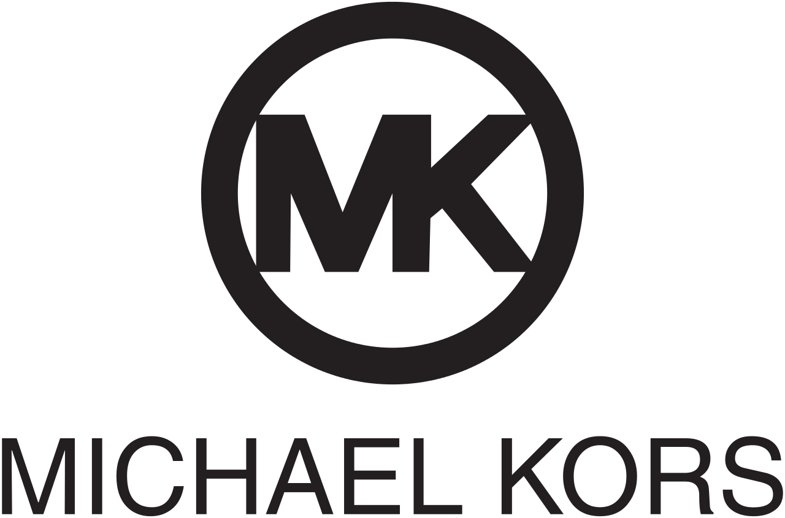
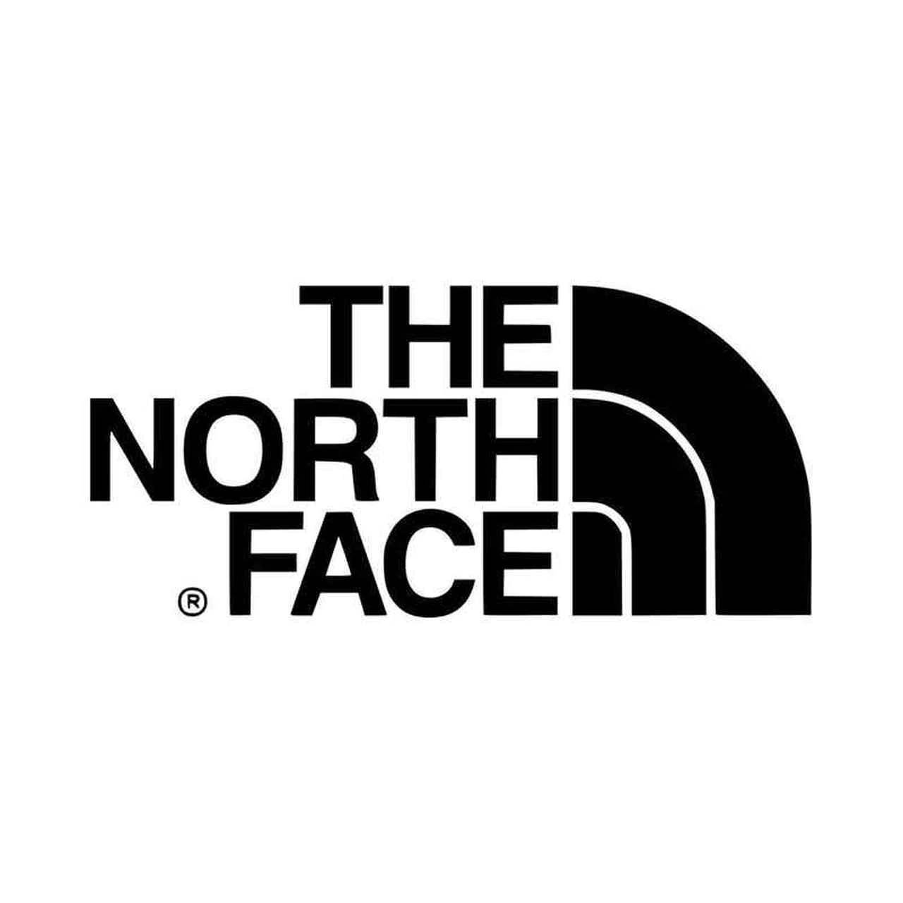

Nike
Nike is a very good brand for many reasons. They have all kinds of attire and supplies. The attire they carry is for running, swimming, sports, and even lounge wear.
The supplies they carry are such as sporting items bats, gloves, footballs, basketballs, water bottles, soccerballs, and backpacks. Too see their merchandise click here.
My favorite thing from nike is their different types of sweatshirts. I like their sweatshirts the most because they are so confortable and easy to move around in. I always like them because the colors don't fade and they last a very long time without being ruined.
Michael Kors
Michael Kors is a nice brand for anything expecially nicer things. It's a better clothing line/jewerly for nicer events because it's more dressey and fashionable.
They are kind of expencive but if you are needed a better look for an event then Michael Kors would be a great pick .Too see their merchandise click here.

I like them a lot because they have very nice watches and bags. One of the backpacks I had bought is a nice leather and has many differnt pockets to it so it is really good.
I always like the perfume they have. I like it a lot because it just gives off a differnt vibe and it doesn't give me a headache like lots of other perfumes do.
North Face
North Face is also a wonderful brand. It is a wonderful brand because it has all the cosey items. It has nice items for the winter like thick coats, mini jackets, hats, and gloves. Another good thing about this brand is that they have shorts for the summer time and short sleeve shirts.
They also sell equipment for snowboarding, skiing, and they have backpacks. Too see the items they sell click here.

I like this brand because when I go skiing in the winter they also have the hook ups and the supplies I need. Another good thing about this brand is that the coats last awhile and in good condition if you take nice care of them. For the summer the clothes they have are good to manuvure in and not to heavy for you in the heat.